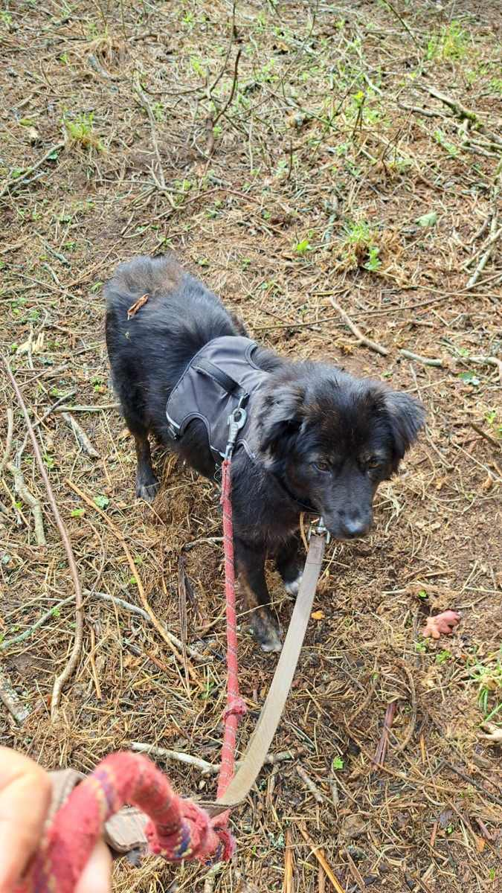
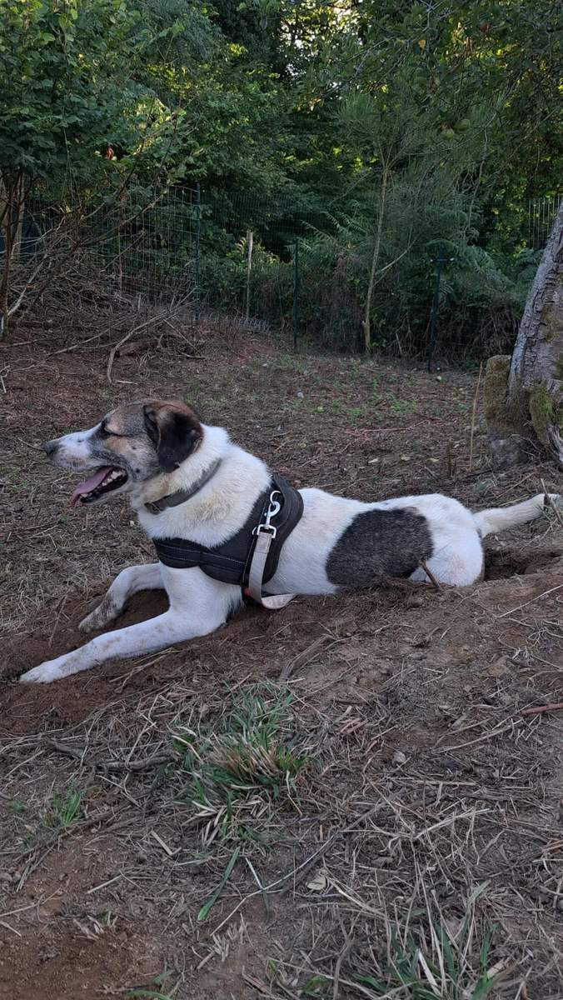
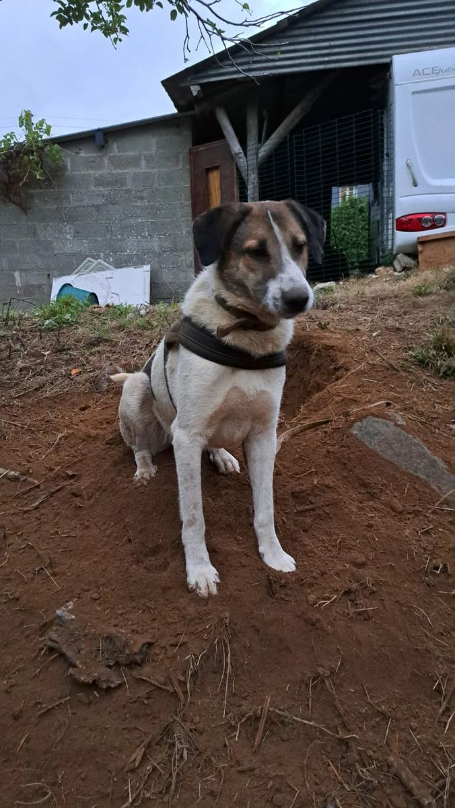

Accès protégé
On peaufine encore quelques recoins avant d'ouvrir grand les portes. Si le mot de passe vous a été donné, vous êtes au bon endroit.
Ce n'est pas tout à fait ça — on retente ?
On peaufine encore quelques recoins avant d'ouvrir grand les portes. Si le mot de passe vous a été donné, vous êtes au bon endroit.
Ce n'est pas tout à fait ça — on retente ?
Un refuge d'un hectare et demi en Bretagne, pensé pour le sauvetage, le soin et la reconstruction — pour les chiens, et pour les humains qui les entourent.
Dogcytocin et Racines est un refuge pour chiens situé à Plougonver (22810), au cœur des Côtes-d'Armor, entre Callac et Guingamp. Le refuge s'étend sur un hectare et demi de nature préservée — pensé dès le départ pour le sauvetage, le soin et la reconstruction.
Notre mission est double : recueillir et soigner des chiens abandonnés, oubliés ou condamnés ailleurs — en France comme à la fourrière de Târgu Jiu, en Roumanie — en leur offrant du temps, de l'espace et une vraie seconde chance ; et accueillir des bénévoles isolés ou en situation de handicap, pour qui ce lieu devient un endroit où se rendre utiles, entourés d'animaux et de nature.
Notre nom porte cette double mission : Dogcytocin, du chien et de l'ocytocine — la molécule de l'attachement et de la confiance — et Racines, celles du lieu que nous préservons, et celles, humaines, que nous aidons à reconstruire.

L'idée était déjà là depuis longtemps — six ans à rêver d'un endroit pour les chiens, un vrai endroit, pensé autrement. Un projet que je remettais toujours à « un jour… », en attendant d'être prête.
Et puis je suis arrivée ici, en Bretagne, sur ce terrain entouré de nature. Pour la première fois, ce rêve avait un endroit où prendre racine — mais il lui manquait encore quelque chose pour devenir réel.
Ce quelque chose est arrivé de Roumanie : les photos des chiens de la fourrière de Târgu Jiu, des dizaines de regards derrière des grilles, des chiens qui n'avaient plus beaucoup de temps.
Je me suis dit une chose toute simple : si j'attends d'être prête, certains d'entre eux ne seront plus là. Ce rêve est devenu un projet. Et ce projet est devenu une association : Dogcytocin et Racines.

Pourquoi ce nom ? Dogcytocin, du chien et de l'ocytocine — la molécule de l'attachement et de la confiance. Et les Racines : celles de ce lieu que nous préservons, mais aussi celles que l'on peut perdre… et reconstruire. Car Dogcytocin et Racines n'a jamais eu vocation à être uniquement un refuge.
Sauver, mais pas seulement sortir un chien d'une fourrière. Nous voulons leur donner le temps de souffler, de se soigner, de réapprendre à faire confiance — et leur trouver, non pas la première famille venue, mais la bonne.
Et accueillir des humains. Des personnes isolées, en situation de handicap ou en reconstruction, qui trouvent ici un endroit où se rendre utiles, entourées d'animaux et de nature.

Aujourd'hui, on construit — au sens propre. Les parcs prennent forme, les clôtures se montent. Et nous ne sommes déjà plus seules : autour de ce projet se rassemblent des personnes qui donnent du matériel, du temps, des compétences… Plein de petits éléments différents qui, ensemble, construisent quelque chose de plus grand.
Nous ne sauverons pas tous les chiens. Mais si nous pouvons changer entièrement le monde de ceux
qui passeront par ici… alors ça vaut la peine d'essayer.
Bienvenue chez Dogcytocin et Racines.